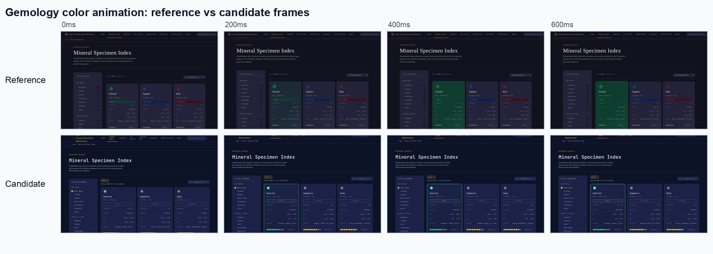
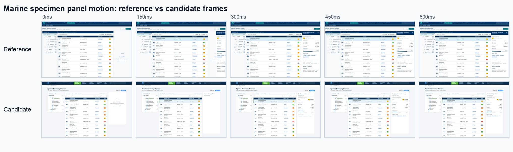
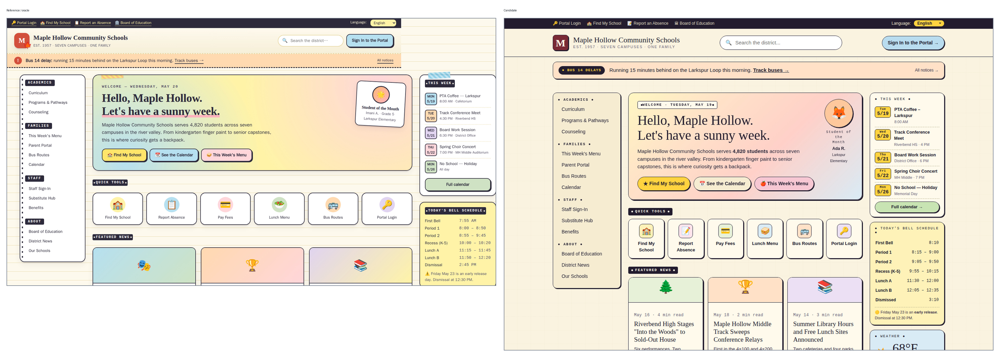
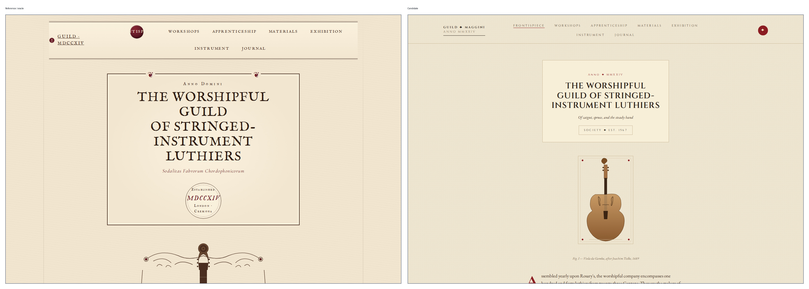
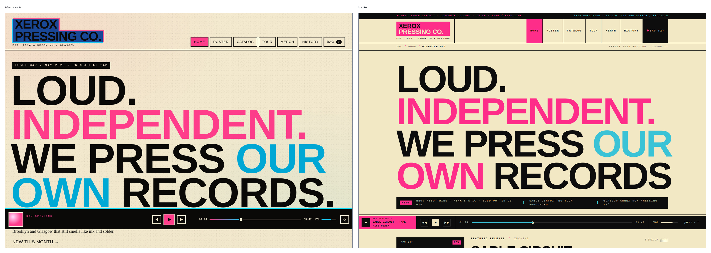
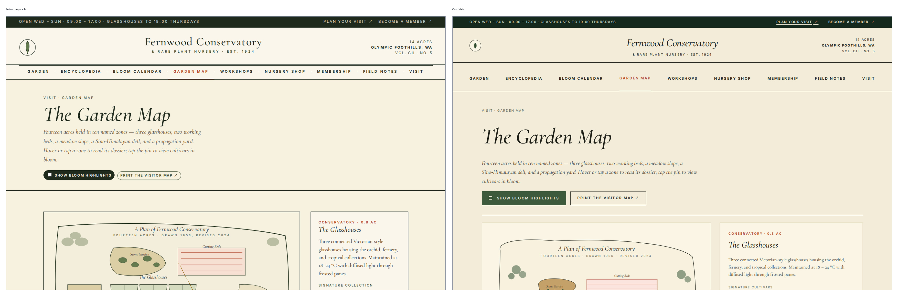
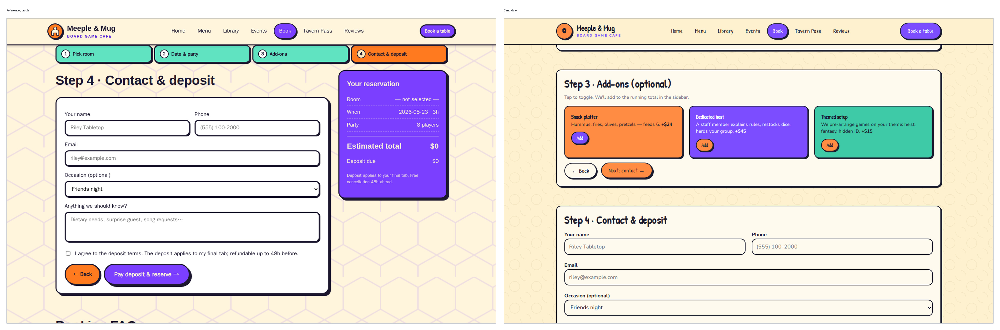
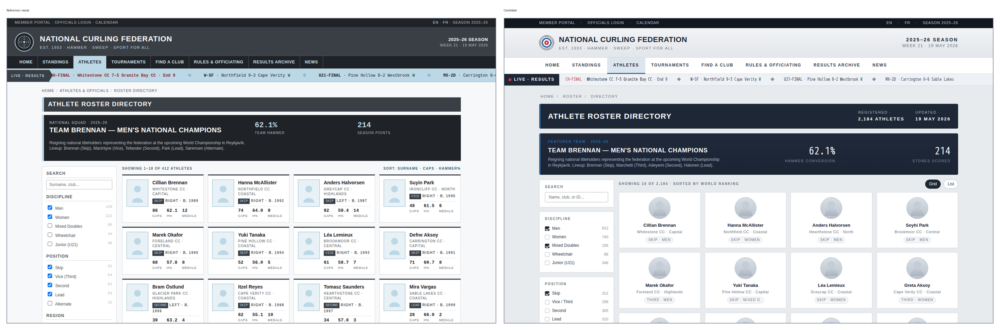

We built a browser-state evaluator for screenshot-to-code website reproduction. The main finding is clear: broad visual similarity is not enough. The reward needs rendered HTML, CSSOM, visual blocks, and state coverage to distinguish faithful reproduction from a plausible page in the same genre.
Multi-page tasks generated as a first dataset for Harbor evaluation.
Full-page and stateful captures: dropdowns, filters, tabs, accordions, selected nodes.
Enough separation to inspect what the reward is actually learning.
The evaluator treats the browser as the source of truth. For each oracle capture, it serves the reference and candidate pages, replays the capture state, then extracts screenshots, rendered DOM/outerHTML, CSSOM, visual blocks, and layout boxes from that live page state.
This matters because future candidates may be plain HTML, React, Solid, Tailwind, or a build system. The reward should not care about source shape. It should care about what the browser renders.
The run was analytically valid: metrics completed for all 12 trials. Some trials hit an old markdown report writer bug after metrics completed; that bug does not affect the score data used here.
The scalar reward is a weighted score per manifest capture. Coverage is applied once as the outer multiplier. Unsupported evaluator components are removed from the available denominator; numeric zeros remain real zeros.
| Component | Weight | Role |
|---|---|---|
| Screenshot size match | 0.05 | Cheap rendering/page-length guard. |
| Rendered HTML | 0.10 | Content and DOM structure. |
| VLM | 0.20 | Human-like visual judgement. |
| Pixel match | 0.05 | Global + blockwise pixel fidelity. |
| Visual block aggregate | 0.00 | Reported as evidence; not directly weighted in the current scalar reward. |
| BBox geometry | 0.10 | Block shape and placement, derived from visual-block matching. |
| CSSOM style | 0.10 | Computed style fidelity over matched visual blocks. |
| DreamSim | 0.10 | Broad perceptual similarity. |
For animation captures, the reward should be honest about temporal behavior. A color animation is not scored by asking whether the candidate ever shows a similar color; it is scored by asking whether the browser-observed target changes in the same way from the first sampled frame.
This is why the animation color metric uses target crop delta and visual-area-weighted color delta. If the oracle changes the whole card background but the candidate only changes a thin border, the border does not dominate the score.
| Channel | Primary signal | What it checks |
|---|---|---|
| Motion | bbox IoU + motion delta | Target position/size and movement over sampled frames. |
| Color | target crop delta + area-weighted color delta | Local target change and relative RGB change over time. |
The two animation tasks were evaluated through candidate-side manifest planning. Both oracle animation intents were mapped to candidate routes, triggers, and targets, and both produced scored animation rows.
| Task | Reward | Coverage | Animation | Key animation scores | Read |
|---|---|---|---|---|---|
| Gemology reference database | 0.588 | 1.000 | gem-card-jewel-shift | target delta pixelmatch 0.002; color delta 0.028; absolute crop pixelmatch 0.914 | The candidate created the right interactive card target, but it mostly changed border treatment while missing the oracle's full-card background transition. |
| Marine biology reference portal | 0.533 | 1.000 | specimen-panel-slide | bbox IoU 0.354; directional motion delta 0.000 | The candidate found the correct specimen-panel intent and motion target, but it did not reproduce the oracle's horizontal slide path. |

#specimen-grid > div:nth-of-type(1) on /mineral-index.html; the target is scored from browser-captured frames, not static source.
#species-tbody tr:nth-of-type(1) and #detail-panel, and the motion channel was scored from browser-captured frames.The spread is meaningful: the best candidate is about 3.5x the lowest reward. DreamSim remains high for weak candidates, while rendered HTML, CSSOM, and visual-block/geometry metrics separate fidelity.
| Trial | Reward | Coverage | HTML | CSSOM | VB | Read |
|---|---|---|---|---|---|---|
| site-01-education-k12 | 0.678 | 0.957 | 0.634 | 0.646 | 0.855 | Best overall. Structure, content, and styling line up. |
| site-05-retail-marketplace | 0.620 | 0.882 | 0.507 | 0.589 | 0.767 | Good visual system; missing density states. |
| botanical-garden-nursery | 0.607 | 0.975 | 0.477 | 0.622 | 0.831 | Strong visual blocks; one state miss. |
| site-04-science-research | 0.599 | 0.959 | 0.496 | 0.452 | 0.750 | Good broad reproduction; weaker style/geometry. |
| podcast-network | 0.596 | 0.944 | 0.473 | 0.509 | 0.759 | Good page vibe; state gaps remain. |
| storm-chasers-community | 0.576 | 0.882 | 0.541 | 0.519 | 0.748 | Decent static structure. |
| regional-credit-union | 0.569 | 1.000 | 0.485 | 0.521 | 0.809 | Coverage complete; local branch-state geometry failed. |
| tabletop-gaming-cafe | 0.556 | 0.850 | 0.496 | 0.494 | 0.711 | Low coverage from missed interaction states. |
| zen-center | 0.548 | 0.943 | 0.438 | 0.575 | 0.801 | High broad visual scores; HTML gate catches drift. |
| curling-federation | 0.414 | 0.947 | 0.382 | 0.503 | 0.776 | Same domain, wrong density/card system. |
| indie-record-label | 0.261 | 1.000 | 0.314 | 0.420 | 0.768 | Plausible vibe, weak rendered content structure. |
| lutherie-guild | 0.194 | 1.000 | 0.279 | 0.271 | 0.699 | DreamSim high, real structure/style low. |
Short answer: yes, directionally. The 0.6-0.7 candidates are visibly more faithful than the 0.2 candidates. The high-reward pages preserve the original page type, repeated components, content density, nav/sidebar/footer grammar, and browser-rendered structure. The low-reward pages may still be attractive, but they are closer to a genre rewrite than a reproduction. A 0.6 is not pixel-perfect; it is a candidate that cleared more of the browser-state reproduction checks.


This is the intended behavior. The reward does not collapse to "does this look like the same genre?" It drops when browser-rendered structure and local geometry are not faithful.
The highest-scoring task is not merely attractive. It keeps the page grammar: repeated structures, content density, navigation, and styling survive the reproduction.
This is the cleanest warning against making DreamSim a primary reward driver. The broad aesthetic family is right, but the reproduction is not faithful.

A judge or perceptual model can be tempted by a plausible page. Rendered HTML and CSSOM prevent over-crediting by checking whether the actual browser-rendered structure is close.

This is the intended use case for visual block scoring. Once visible blocks correspond, the metric checks whether the same pieces exist with similar area, text, placement, and style.

This case explains why visual block cannot be reduced to text. The candidate includes much of the right form content, but the block area, local pixels, BBox, and CSSOM show that the state layout is wrong.

This is the case for local fidelity metrics. Broad screenshot identity and visual-block aggregate can still recognize the page, but HTML, CSSOM, BBox, and blockwise pixelmatch correctly penalize density and layout drift.
The agent is stronger at static page construction than interaction-state reproduction. Missing filters, toggles, accordions, selected nodes, and alternate views should remain first-class reward failures.
| Metric | Usefulness | Evidence | How to use it |
|---|---|---|---|
| Rendered HTML | Very strong | Trial corr 0.933 | Best discriminator for content, section, and repeated DOM structure drift. |
| CSSOM | Very strong | Trial corr 0.840 | Catches browser-computed style: typography, spacing, color, layout. |
| Visual block aggregate | Strong | Capture corr 0.587 | Useful visible-block fidelity signal, but must be read with submetrics. |
| Visual block size | Strong | Capture corr 0.558 | Tells whether the same visual block area exists. This catches missing/reshaped components. |
| Visual block text | Strong but incomplete | Capture corr 0.516 | Good content-block signal; can overcredit when text appears in the wrong geometry. |
| Blockwise pixelmatch | Useful local check | Capture corr 0.407 | Compares pixels inside matched blocks, avoiding many whole-page false positives. |
| BBox geometry | Useful but harsh | Capture corr 0.456 | Good for card density and placement; not reliable alone. |
| VLM judge | Useful sanity signal | Trial corr 0.409 | Sees human-facing quality, but can overrate plausible wrong structure. |
| DreamSim | Broad only | Compressed 0.747-0.862 | Good catastrophic mismatch guard, weak final reward driver. |
| Global pixelmatch | Debug only | Trial corr ~0 | Too sensitive to whitespace/page size and too forgiving when backgrounds dominate. |
| Masked CLIP | Do not use yet | Skipped/null | No evidence it adds useful signal; avoid CLIP forward passes for now. |
Visual block is useful because it decomposes visible text/content blocks. The aggregate score is less informative than the submetrics.
| Submetric | Range | Mean | Capture-score corr | Interpretation |
|---|---|---|---|---|
| Size | 0.038-0.997 | 0.668 | 0.558 | Whether the same visible block area exists. |
| Text | 0.697-1.000 | 0.908 | 0.516 | Whether matched blocks contain similar text. |
| Position | 0.254-0.966 | 0.861 | 0.313 | Whether the block lands in a similar location. |
| Text color | 0.731-0.968 | 0.845 | 0.158 | Mostly diagnostic; weak reward driver. |
| Block pixelmatch | 0.006-0.713 | 0.316 | 0.407 | Local pixel fidelity inside matched blocks. |